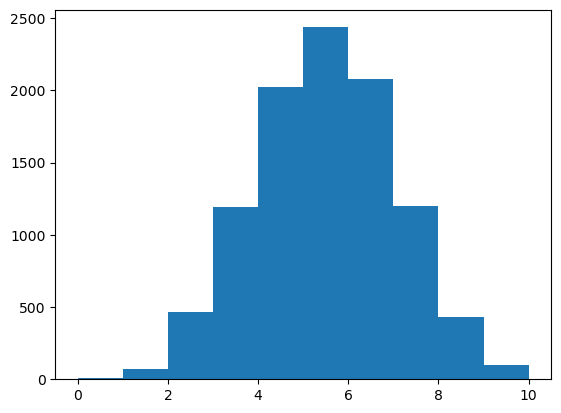
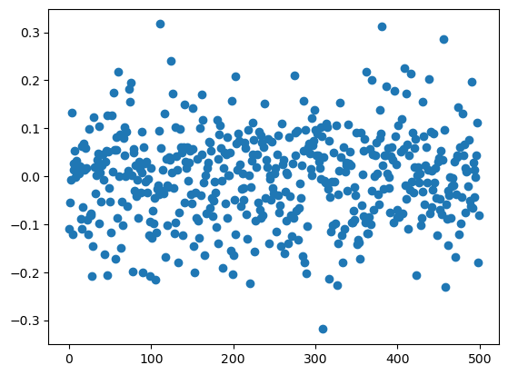
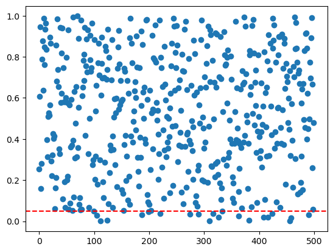
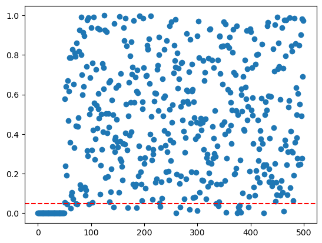

import torch
import torch.nn as nn
import torch.optim as optim
import numpy as np
import matplotlib.pyplot as plt
import scipy
from scipy.stats import t
from scipy.stats import ttest_1samp
torch.manual_seed(42)<torch._C.Generator at 0x1369eb170>import torch
import torch.nn as nn
import torch.optim as optim
import numpy as np
import matplotlib.pyplot as plt
import scipy
from scipy.stats import t
from scipy.stats import ttest_1samp
torch.manual_seed(42)<torch._C.Generator at 0x1369eb170>Let’s toss a coin 10 times.
sample = np.random.binomial(10,0.5)sample3Let’s repeat this 10,000 times.
How many times will we see 10 heads and 0 tails?
nsim = 10000
nheads = np.zeros((nsim))
for i in range(nsim):
sample = np.random.binomial(10,0.5)
nheads[i] = sampleplt.hist(nheads)(array([ 8., 69., 466., 1193., 2022., 2436., 2080., 1197., 433.,
96.]),
array([ 0., 1., 2., 3., 4., 5., 6., 7., 8., 9., 10.]),
<BarContainer object of 10 artists>)
sum(nheads == 0)10If we do enough tests, we will see rare things, even when the null hypothesis is true!
How do we account for this?
n = 100 # number of samples
p = 500 # number of features
X = np.random.normal(size = (n, p))
#h0 is trueX[:, 0]array([-1.23144817, -1.6221481 , 0.78530339, 0.19165089, 0.84894177,
1.06585683, -0.28432315, -0.29614501, -2.4748051 , 0.47858428,
-0.24213327, 0.52410957, 0.23189972, -0.94610517, -1.29467143,
0.13072292, -0.2909665 , -0.39655049, -0.39069435, 1.73524628,
-0.12923568, 0.13841862, 0.49422539, 0.46360528, 0.03464935,
1.85822524, -0.19238505, 0.44577581, -0.05795199, -1.51849376,
0.30713414, -0.38423689, -0.18367048, -1.13872914, 0.42513157,
2.03316686, 0.63474446, -0.14888316, 1.21969421, 0.30649158,
-1.09807878, -0.33338102, -0.27322733, 0.13588905, 0.94608741,
-0.28643423, -0.66412568, -0.1883097 , -1.13789014, -0.6014846 ,
-0.53071217, -0.9349938 , 0.29486146, 1.72115537, -1.73645224,
-1.71836627, -1.33991474, 2.04787357, 0.61984414, -0.32908192,
-0.63547235, -0.61090382, -1.4197087 , -0.90519644, -0.71474274,
-0.24549478, 0.95192999, -0.59069714, -0.62842783, -1.42996909,
1.27005003, 0.45029865, -0.14369338, 0.78588132, 1.8973945 ,
-0.13167774, -1.19428275, 1.13671073, 0.47600343, 1.15980724,
-0.40547833, -2.00610012, -0.65188175, -1.61280317, 0.07945569,
0.51100756, 0.37331791, 0.29070579, -0.54083063, -0.24666013,
-1.34339946, 0.59813569, -0.30900759, -0.81160593, 1.32828321,
-0.94538251, 0.54760281, 0.39206287, 0.61582615, -2.07603177])plt.scatter(range(p), X.mean(axis=0))
def ttest_1(x, h0_mean=0):
df = n-1
mean = x.mean() # sample mean x_bar
d = mean - h0_mean # x_bar - mu (mu=0 under H_0)
v = np.var(x) # sample variance
denom = np.sqrt(v / n) # variance of sample mean
tstat = np.abs(d / denom)
# xmean - h0_mean / (sqrt(var/n))
# our test-stat is a t distributed random variable with n-1 degrees of freedom
pval = t.cdf(-tstat, df = df) + (1 - t.cdf(tstat, df = df))
# pval - probability in the lower and upper tails of our t distribution
return pvalpvals = np.zeros((p))
for j in range(p):
pvals[j] = ttest_1samp(X[:, j], 0).pvalueplt.scatter(range(p), pvals)
plt.axhline(y=0.05, color='r', linestyle='--')
# no multiple testing correction
# p = 500 (testing 500 hypotheses)
# we expect to reject 500 * 0.05 = 25
alpha = 0.05
nmp = np.where(pvals < alpha)[0]
print("No multiple testing correction: reject ", nmp.shape[0])
# bonferroni
bf = np.where(pvals < alpha/p)[0]
print("Bonferroni: reject ", bf.shape[0])
# holms
ord_pvals = np.argsort(pvals)
holms = []
for j, s in enumerate(ord_pvals):
#j = 0, s is index of smallest p-val
denom = p - j
if pvals[s] <= (alpha/denom):
holms.append(s)
else:
break
print("Holms: reject ", len(holms))
# FDR, BH procedure # this is different from holms and bonferroni in that
# we control FDR, not FWER
q = 0.05
bh = []
for j, s in enumerate(ord_pvals):
val = q * (j + 1) /p # zero indexing
if pvals[s] <= val:
bh.append(s)
else:
break
print("Benjamini-Hochberg: reject ", len(bh))No multiple testing correction: reject 21
Bonferroni: reject 0
Holms: reject 0
Benjamini-Hochberg: reject 0true_mean = np.array([1.0] * int(p/10) + [0] * int(p * 9/10))
X = np.random.normal(size = (n, p))
X = X + true_mean
plt.scatter(range(p), X.mean(axis=0))
pvals = np.zeros((p))
for j in range(p):
pvals[j] = ttest_1samp(X[:, j], 0).pvalue
plt.scatter(range(p), pvals)
plt.axhline(y=0.05, color='r', linestyle='--')
print('Number of hypotheses we should reject: ', int(p/10))
# no multiple testing correction
alpha = 0.05
nmp = np.where(pvals < alpha)[0]
print("No multiple testing correction: reject ", nmp.shape[0])
# bonferroni
bon = np.where(pvals < alpha/p)[0]
print("Bonferroni: reject ", bon.shape[0])
# holms
ord_pvals = np.argsort(pvals)
holms = []
for j, s in enumerate(ord_pvals):
denom = p - j
if pvals[s] <= (alpha/denom):
holms.append(s)
else:
break
print("Holms: reject ", len(holms))
# FDR, BH procedure
q = 0.05
bh = []
for j, s in enumerate(ord_pvals):
val = q * (j + 1) /p # zero indexing
if pvals[s] <= val:
bh.append(s)
else:
break
print("Benjamini-Hochberg: reject ", len(bh))Number of hypotheses we should reject: 50
No multiple testing correction: reject 74
Bonferroni: reject 50
Holms: reject 50
Benjamini-Hochberg: reject 55